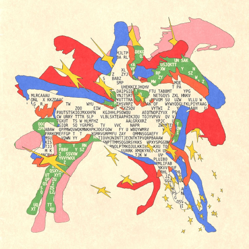
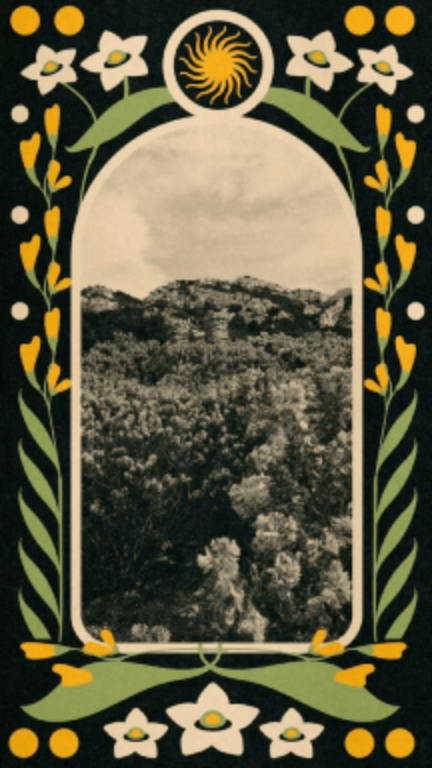
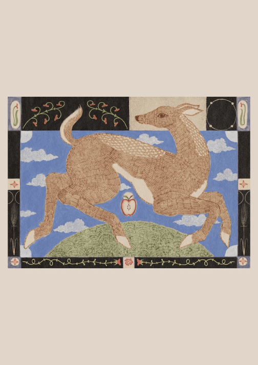

My name is Scout Santen
these are a few artists who inspire me
enigmatriz

What inspires me about her work is the abstraction of the multiple
forms of media, in a lot of her pieces you’ll see a vibrant design exploding
with text, but text used as a form as texture rather than a message.
I also admire how she take 18th century pieces of art and puts a new spin
on them by incorporating bits of code as the background or to fill parts of the subject.
Gabe Schieneder

What inspires me about his work is the combination of photography and graphic design,
I've always been I tested in multimedia artists because I find it hard myself to
just stick to one media. I also have always loved folk art and I enjoy how each
on of his photographs he creates these wonderful almost embroidered borders.
River Cousin

What inspires me about his work is his folk style despite working in graphic design,
for some reason when I think about graphic design my mind goes to very cooperate clean
line designs, and I enjoy the almost kiddish vibe to a lot of his pieces.
I learned a lot while making this, in the beginning I had trouble with changing my photo format into a png
because I already had them downloaded and then redownloading and putting them in the right img file was a bit confusing.
You can still see how there is two ".png" extensions attached to each image title, which is something I have to change.
I really liked the look of being able to make the names of the artist clickable, sending the user directly to the artists page,
because it takes up less visual space on the site and its also super user friendly.
With the Alt text I'm still a little unclear if I'm describing the most important visual information in the photo.
I wasn’t sure how important it was to mention things like color or specific visual details. But I did learn that alt text should focus on the information
that someone would need to understand what is being shown, rather than focusing on every single detail.
If I were to attempt this again I think I would try to spread out the text and images a little but more just to make the format feel less crowded.